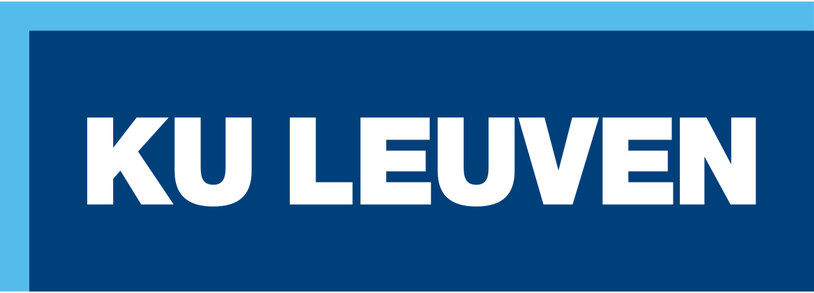

Learn how a ROS 2 system is organised, built and connected before moving to a robot.
Browser simulation of Linux and ROS 2. Python runs in CPython/Pyodide; C++ compiles to WebAssembly.
Designed for the ROS 2 exercise session at Diepenbeek.

Browser simulation of Linux and ROS 2. Python runs in CPython/Pyodide; C++ compiles to WebAssembly.
Designed for the ROS 2 exercise session at Diepenbeek.